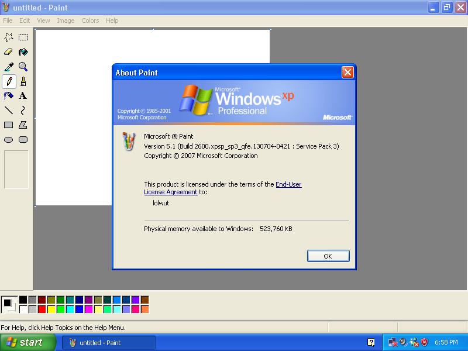
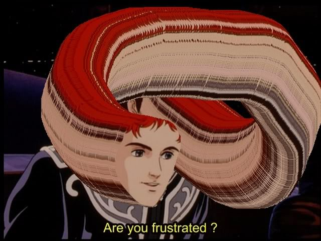

The Internet is Serious Business!
Home > Computers, Technology, and Internet > Microsoft > Windows XP > Good Old Microsoft Paint
Note that I am referring specifically to the version of Microsoft Paint included with Windows XP, which, in my Windows XP virtual machine, is listed as version 5.1 and looks like this:

I cannot remember exactly when I first opened up and used Paint. I regularly used two desktop computers prior to obtaining my first Windows XP desktop (one of which ran Windows 95, the other of which ran Windows Millennium Edition, and both of which had their own respective versions of Paint included), and during that time it is likely that I started Paint at least once and played around in it for a little while before becoming bored and then closing it. My first solid memories of using it, though, were most likely from 2005: I played RuneScape almost daily throughout that entire year, and I remember one day happening upon a Web page containing a short guide written by another player of that game informing the reader how to take, edit, and save screenies
(that is, screenshots of the game). The guide instructed me to press the print screen key on my keyboard to capture a screenshot of whatever was displayed on my screen at that instant, start up Paint, and then paste the captured image into Paint, after which I could edit and then finally save it. (Even today, this is still the method I use whenever I need to take, edit, and save a capture of my current display; I have never used the Snipping Tool—which was not included with Windows XP—and, because I am quite set in my ways and very much dislike change, I don't plan on starting, either.)
It was after this that I began to use Paint regularly, first merely to edit and save captured screenshots, but soon for many other things. It became one of my most-used applications in Windows XP—I have spent many, many hours using it over the years, and I became quite proficient with each of its tools and features. Many times, when I was bored, I would even start up Paint and begin scribbling and messing around in it for fun, or perhaps open another image in it and then proceed to edit it spontaneously to entertain myself. I especially liked three features of Paint: inverting all colors of the current image, which could be accomplished by the keyboard shortcut Ctrl+I (when held down, it causes the entire image to flash rapidly, an amusing display); instantly making a copy of the current selection by holding down the Control key while dragging that selection with the left mouse button; and, my favorite, producing an entire trail of copies of the current selection by holding down the Shift key while dragging it with the left mouse button. This last feature is, I think, particularly cool, and has many creative uses; when done on people's faces, the effect is utterly hilarious:

I am well aware, of course, that Paint is not a very highly regarded image editor. It is a very basic editor, and I will admit that many tasks are either virtually impossible or at least far more difficult to perform in Paint than in many other image-editing programs. This is certainly not to say, however, that it is useless, or that it has produced no masterpieces: it is a simple program which starts up quickly, and which has very little of a learning curve; for many simpler image-editing tasks, I see no reason to start up a complex program like Adobe Photoshop or GIMP when Paint is readily available. It will always remain a part of my image-editing toolkit, and back in the 2000s, at least, it was my sole image editor.
I only stopped using this version of Paint when I stopped using Windows XP as my main operating system during September/October 2009, when I upgraded to Windows 7. Although Windows 7's version of Paint is substantially similar at its core, some features here and there were altered or removed, with the newer version also adding new functionality of its own. Though using the version of Microsoft Paint included with Windows 7 feels quite similar, and I was able to very quickly get started with it, it shouldn't be surprising to you when I say that, even after all these years, I still prefer the Windows XP version of Paint—it is the version that comes to mind first when I hear or read the words Microsoft Paint
, as well as the version I have the fondest memories of.


 All written materials on this Web site are my own, and all are released under the Do What the Fuck You Want to Public License Version 2.
All written materials on this Web site are my own, and all are released under the Do What the Fuck You Want to Public License Version 2.
This page last modified on 26 March 2021.